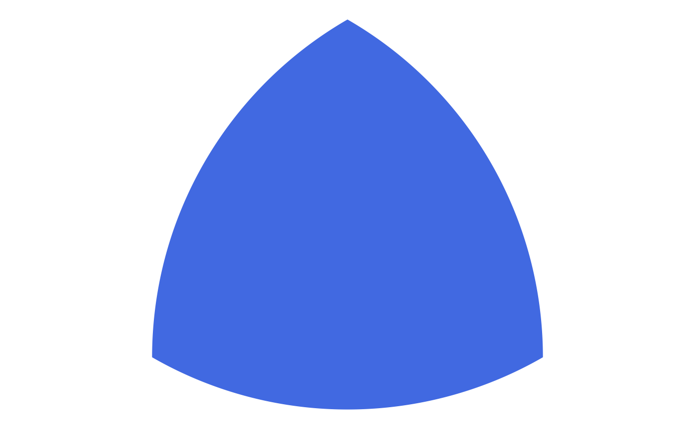

Reuleaux polygon
Arguments
- center
ob_pointat center of the rectangle- n
Number of sides. True Reuleaux polygons have an odd number of sides, but Reauleaux-like shapes with an even number of sides are possible.
- radius
Distance from center to a vertex
- angle
Angle of the object's rotation
- label
A character, angle, or
ob_labelobject- vertex_radius
A numeric or unit vector of length one, specifying the corner radius
- alpha
numeric value for alpha transparency
- color
character string for color
- fill
character string for fill color
- linewidth
Width of lines
- linetype
type of lines
- style
Gets and sets the styles associated with polygons
- id
character string to identify object
- ...
<
dynamic-dots> unused
Additional properties
@aestheticsA list of information about the object's aesthetic properties
@angle_atA function that finds the angle of the specified point in relation to the circle's center
@arc_atA function that finds the arc at a specified angle
@arc_radiusThe radius of the arcs used to construct the reuleaux object
@arcsReturns the arcs of each reuleaux object
@bounding_boxa rectangle that contains all the reuleaux objects
@central_angleThe angle from the center to adjacent vertices of the reuleaux object
@chord_lengthThe length of each chord of the arcs used to construct the reuleaux object
@circumferencecircumference of the reuleaux object
@circumscribedReturns the circle that circumscribes the object
@geomA function that converts the object to a geom. Any additional parameters are passed to
ggforce::geom_shape.@inscribedReturns the circle that inscribes the object
@inscribed_angleThe angle of the arcs used to construct the reuleaux object
@lengthThe number of circles in the circle object
@normal_atA function that finds a point that is perpendicular from the circle and at a specified distance
@point_atA function that finds a point on the circle at the specified angle.
@polygona tibble containing information to create all the polygon points in a reuleaux object
@tangent_atA function that finds the tangent line at the specified angle.
@verticesReturns the vertices of the reuleaux object
Examples
ggdiagram() +
ob_reuleaux(n = 3, fill = "royalblue", color = NA)
